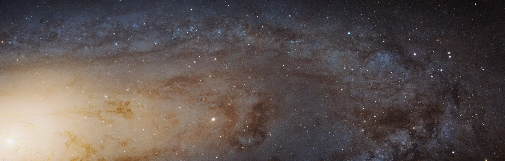

Andromeda Galaxy (M31)

Overview
The Andromeda Galaxy is the nearest large spiral galaxy to our own Milky Way and the biggest member of our Local Group of galaxies. It contains around a trillion stars spread across a disk more than 200,000 light-years wide. On a clear, dark night, Andromeda can be seen without a telescope as a faint, fuzzy smudge. For centuries people thought it was a cloud inside our galaxy, until Edwin Hubble proved in the 1920s that it is a separate galaxy far beyond the Milky Way.
Interesting Facts
- Andromeda is the most distant object most people can see with the naked eye.
- NASA's 2025 Hubble panorama of Andromeda used more than 600 overlapping images and shows about 200 million stars.
Quick Facts
- Type: Spiral galaxy
- Distance from Earth: About 2.5 million light-years
- Size: About 200,000-260,000 light-years across
- Discovery: Recorded by Persian astronomer Abd al-Rahman al-Sufi in 964 AD; Edwin Hubble showed it was a separate galaxy in the 1920s